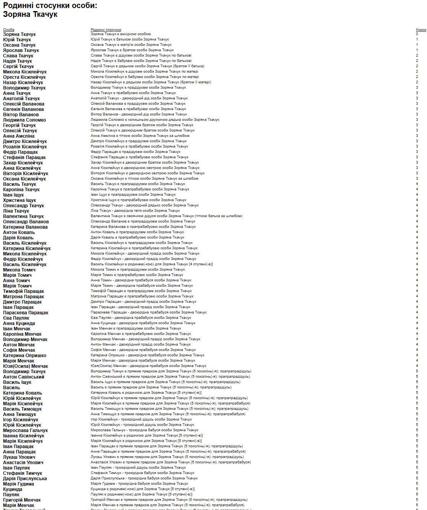

Стосунки
Список родинних стосунків Зоряни Ткачук зі ступенями спорідненості. Список сформовано у програмі Family Tree Builder.

Хроніки родини.
Список родинних стосунків Зоряни Ткачук зі ступенями спорідненості. Список сформовано у програмі Family Tree Builder.

Хроніки родини.